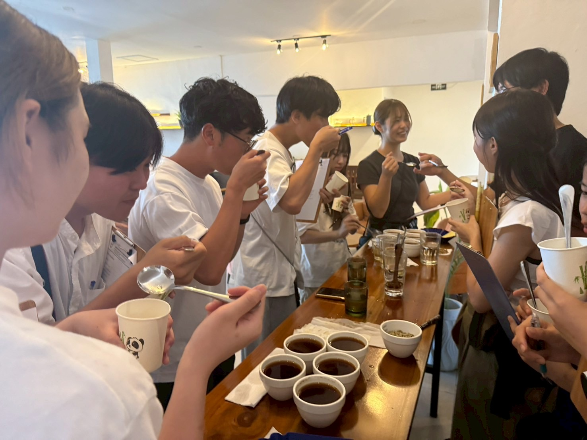
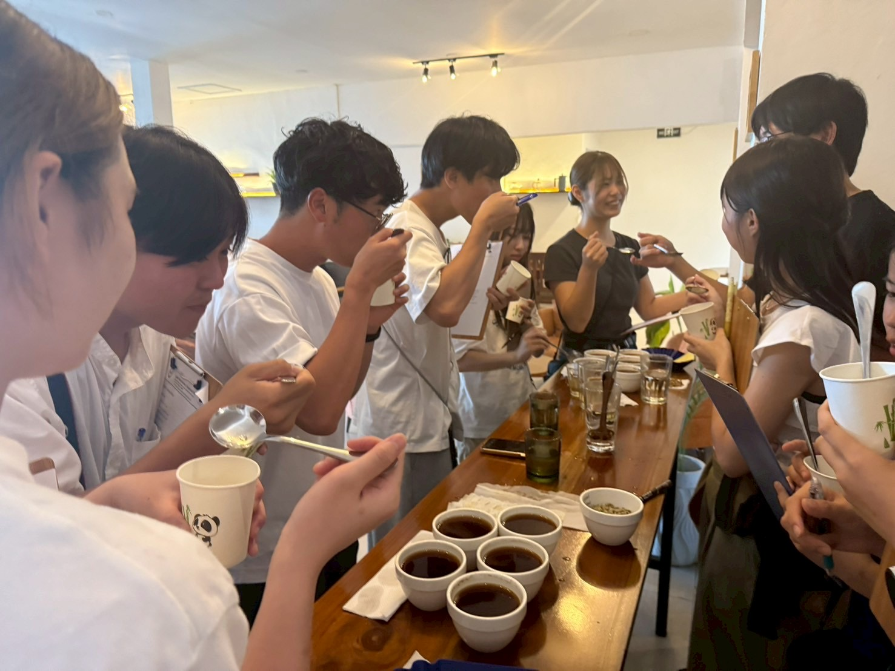

東ティモール 観光ガイド
美しい島国で、歴史と自然の魅力を発見しよう

美しい島国で、歴史と自然の魅力を発見しよう
アジアの隠れた宝石
東ティモール産コーヒーは世界的に評価され、オーガニック栽培で知られています。豊かな土壌と気候が生み出す独特の風味をお楽しみください。
5月〜10月の乾季が観光に最適です。気温は年間を通じて温暖で、美しいビーチと山々の景色を楽しめます。
必見のスポットをご紹介
必見スポット。美しい景色と巨大なキリスト像

東ティモールの歴史や占領時代について学べる博物館
東ティモールの独立運動の歴史を学べる博物館です。より詳しく学びたい場合はChega博物館をおすすめします。
自然の岩礁エリアでのスイミング
地元の市場とショッピングセンターでの物価調査
地元の新鮮なフルーツが並ぶ活気ある市場です。外国人だと値段を高く言われることがありますが、見学するだけでも楽しい体験ができます。

Chega博物館行った後に行くと感慨深い
独立への道のりと不屈の精神
東ティモールは、ポルトガル植民地時代からインドネシア占領、そして独立まで、数世紀にわたる苦難の歴史を歩んできました。この小さな島国は、大国の支配に屈することなく、最終的に独立を勝ち取った不屈の精神の象徴です。
ポルトガル人がティモール島に到達し、植民地化を開始。香辛料貿易の重要な拠点として発展。
ポルトガルでカーネーション革命が起こり、植民地政策の転換が始まる。
11月28日に独立を宣言するも、12月7日にインドネシアが軍事侵攻を開始。
24年間にわたるインドネシアの軍事占領。抵抗運動と国際社会の支援が続く。
独立運動家の葬儀でインドネシア軍が発砲。多くの死傷者を出した悲劇的な事件。
国連主導の国民投票で78.5%が独立を選択。インドネシア軍の撤退が決定。
5月20日、東ティモール民主共和国として正式に独立。21世紀最初の独立国家となる。

初代大統領
独立運動の指導者として24年間の抵抗を率い、初代大統領として独立を実現。
ノーベル平和賞受賞者
国際的な独立運動の外交官として活動し、1996年にノーベル平和賞を受賞。
カトリック司教
独立運動を精神的に支え、国際社会への訴えを続けた宗教指導者。
ポルトガル植民地時代に導入されたカトリック教は、独立運動の精神的支柱となり、現在も国民の95%以上がカトリック教徒です。
テトゥン語、ポルトガル語、インドネシア語、英語など、多様な言語が共存し、それぞれが歴史の証人となっています。
独立運動は国際社会の支援なしには実現できませんでした。現在も多くの国々との友好関係を築いています。
留学体験者

Founder & App Developer
早稲田大学 人間科学部 人間情報学科
個人開発ならではのスピード感で、ユーザーの課題を
解決するプロダクトを提供。
語学学習とゲームの力で、世界中の人々の時間価値を高めることを目指しています。
 


12日間の貴重な体験

この東ティモール留学プログラムは、日本財団ボランティアセンターの皆様のご支援により実現することができました。貴重な機会をいただき、心より感謝申し上げます。
現地での活動を通じて、国際協力の重要性と、一人ひとりの力が世界を変える可能性を学ぶことができました。この経験は私の人生においてかけがえのない財産となっています。
竹内 音碧


現地で使える基本フレーズ
東ティモールへの旅の準備
日本からはインドネシア経由でアクセス可能です。成田・関西・中部空港から出発できます。
ディリには様々な価格帯のホテルがあります。ゲストハウスから高級ホテルまで選択肢豊富です。
現地での食費は1日約2,000-3,000円程度。交通はタクシーやバスが利用できます。
基本的に安全ですが、夜間の一人歩きは避け、貴重品の管理に注意しましょう。
ご質問やご相談がございましたら、お気軽にお問い合わせください